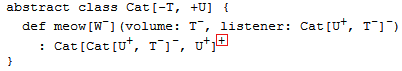
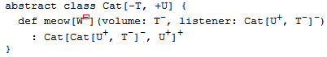

Part V
泛型
类型参数
泛型类
Scala通过[T]指定类型参数：
scala> class Pair[T, S](val first: T, val second: S) defined class Pair
通过传入构造器的参数类型可以推导出生成的实例类型：
scala> val p = new Pair(42, "String") p: Pair[Int,String] = Pair@2f63e9a1
也可以手动指定实例类型：
scala> val p2 = new Pair[Any, Any](42, "String") p2: Pair[Any,Any] = Pair@7ffccfe3
泛型方法
方法的类型参数加了方法名后：
scala> def getMiddle[T](a: Array[T]) = a(a.length /2) getMiddle: [T](a: Array[T])T
也能按参数类型可以推导出生成的实例类型：
scala> getMiddle(Array("Marry","had","a","little","lamb"))
res0: String = a
或显式指定类型：
scala> val f = getMiddle[String] _
f: Array[String] => String = <function1>
scala> f(Array("Marry","had","a","little","lamb"))
res1: String = a
泛型必须指定类型
类型化参数能实现编写泛型类和特质。Scala中的泛型实例都应该写明具体类型（如：
Set[Int]，Set[Int]） ，而不像Java中可以不带泛型类型。
例如：对于容器类来说，成员的类型很重要：
scala> import java.util._ import java.util._ scala> var la = new ArrayList[Any] la: java.util.ArrayList[Any] = [] scala> var lb = new ArrayList[String] lb: java.util.ArrayList[String] = [] scala> var ln = new ArrayList ln: java.util.ArrayList[Nothing] = []
注意没有类型参数的类型被定为了ArrayList[Nothing]。而Nothing是所有类的子类，
所以Queue特质创建实例时一定要加类型参数：
scala> def doesNotCompile(q: Queue) {}
<console>:5: error: trait Queue takes type parameters
def doesNotCompile(q: Queue) {}
当然AnyRef也是一种类型：
scala> def doesCompile(q: Queue[AnyRef]) {}
doesCompile: (Queue[AnyRef])Unit
中置类型
带两个类型参数的类型可以用中置语法表示，如：
Map[String, Int]
可以写为：
String Map Int
以数学表达式：
\[ A \times B = \{ (a,b) | a \in A, b \in B \} \]
为例，它表示从A与B两个范围中生成的对偶的集。Scala中对偶是用(A,B)表示的。如果
想用更加数学的风格来表现对偶，可以定义：
type ×[A, B] = (A, B)
这样以后再写对偶时可以不写：
(String, Int)
而是：
String × Int
中置类型的优先级和普通的操作符一样，而且如果不是以:结尾，默认就是左结合：
String × Int × Int
相当于：
((String, Int), Int)
中置类型的名称可以是任何操作符的字符序列，但不可以是*。因为会和变长参数声明
T*混淆。
类型变化
协变
Scala的泛型在默认情况下是非协变的（nonvariant），即：对于泛型Queue[T]来说，
Queue[String]不是Queue[AnyRef]的子类。
但还是可以设置为协变（covariant）的。用+表明子类型化协变，即Queue[String]是
Queue[AnyRef]的子类：
trait Queue[+T] { ... }
不可变类型可以安全协变
比如Scala默认的不可变List，是可以协变的类型：
val s:AnyRef = "abc"
var objects:List[AnyRef] = List[String]("abc","123")
相对的，如果用的是可变的List，就是不可协变：
scala> var l: java.util.List[Object] = new java.util.ArrayList[java.lang.String]()
<console>:7: error: type mismatch;
found : java.util.ArrayList[String]
required: java.util.List[Object]
Note: String <: Object, but Java-defined trait List is invariant in type E.
You may wish to investigate a wildcard type such as `_ <: Object`. (SLS 3.2.10)
var l: java.util.List[Object] = new java.util.ArrayList[java.lang.String]()
^
可变类型的协变会有问题
Scala默认禁止协变是因为协变会产生问题：
在纯函数式中，许多类型都是自然协变的。然而一旦引入了可变数据，情况就改变了。假设 一个简单的只能读写一个元素的单元格（Cell）类型：
class Cell[T](init: T) {
private[this] var current = init
def get = current
def set(x: T) { current = x }
}
上面的Cell是非协变的。我们现成假设它是协变的，声明为Cell[+T]并发送给Scala
编译器。于是我们可以构建如下存在问题的语句序列：
val c1 = new Cell[String]("abc")
建立String放在c1中，OK。
val c2: Cell[Any] = c1
c2类型是Cell[Any]，把Cell[String]的c1赋值给它也OK。
c2.set(1)
c2是Cell[Any]，所以存数字也OK。
val s: String = c1.get
c1里的字符串，赋给字符串也OK。
上面四行都OK，但是看看这四行放在一起，就出问题了：
val c1 = new Cell[String]("abc")
val c2: Cell[Any] = c1
c2.set(1)
val s: String = c1.get
Cell.scala:7: error: covariant type T occurs in
contravariant position in type T of value x
def set(x: T) = current = x
^
这四行代码是要把整数1赋值给字符串s，这样破坏了类型声明。问题出在第二行，
Cell[Any]和Cell[String]的类型的协变引起了错误。
Java数组是协变的
以前面的Cell类为例与Java中的数组比较，Java中的数组是协变的：
// this is Java
String[] a1 = { "abc" };
Object[] a2 = a1;
a2[0] = new Integer(17);
String s = a1[0];
虽然可以通过编译，但是运行时第四行会报错。Java运行时保存了数组元素类型，在更新时
对新元素进行合法性校验。类型错误时抛出ArrayStore：
Exception in thread "main" java.lang.ArrayStoreException:
java.lang.Integer
at JavaArrays.main(JavaArrays.java:8)
这样看起来好像即没有用又浪费性能。按James Gosling的说法是希望有一个通用处理数组 的简单方法，如需要排序所有元素时：
void sort(Object[] a, Comparator cmp) { ... }
这样确保任意类型参数的数组都可以传入排序方法。当然后来Java有了泛型以后数组的协变 不再有用了，为了向以前老版本兼容才留着。
Scala数组是非协变的
Scala中数组是不可协变的：
scala> val a1 = Array("abc")
a1: Array[java.lang.String] = Array(abc)
scala> val a2: Array[Any] = a1
<console>:5: error: type mismatch;
found : Array[java.lang.String]
required: Array[Any]
val a2: Array[Any] = a1
^
但有时还是要数组能泛型手段与Java遗留方法进行交互。所以Scala允许把T类型的数组
转型为任意T的超类的数组：
scala> val a2: Array[Object] =
| a1.asInstanceOf[Array[Object]]
a2: Array[java.lang.Object] = Array(abc)
逆变
与协变相反的[-T]表示逆变。这样MyClass[AnyRef]可以作为MyClass[String]的子类
。
先看一个例子，出版物为父类类型，图书为子类。方法getTitle根据出版物取得它的标题
：
class Publication(val title: String) class Book(title: String) extends Publication(title) def getTitle(p: Publication): String = p.title
现在用一个单例对象Library来模拟图书馆，里面用一个Set来存放许多图。还有方法
printBookList()输出所有图书的信息，这个方法需要有一个取得书名的函数作为参数，
类型为Book => AnyRef：
object Library {
val books: Set[Book] = Set(
new Book("Programming in Scala"),
new Book("Walden")
)
def printBookList(info: Book => AnyRef) {
for (book <- books) println(info(book))
}
}
println()方法会用到toString()方法，所以info()方法的返回类型只要是AnyRef
的子类都可以。
把之前的getTitle()方法作为实参传递给printBookList()打印出所有书的书名：
scala> Library.printBookList(getTitle) Programming in Scala Walden
从赋值的过程来说，每次赋值操作都是把子类赋值给超类：

从函数参数的角度来看是把Publication => String赋值给Book => AnyRef。在这里：
-
参数必须是
Book的父类； -
结果必须是
AnyRef的子类；
| 参数 | 结果 | |
|---|---|---|
| 实参 | Publication | String |
| 类型变化 | 逆变 | 协变 |
| 形参 | Book | AnyRef |
Scala函数特质中对于S => T类型的函数会定义trait Function[S, T]，这时对参数S
逆变而对结果T协变就是一种常用的策略：
trait Function1[-S, +T] {
def apply(x: S): T
}
对于两个类U和T。如果可以用T可以提供U要用到的功能，并且用起来限制更少，
就可以假设T是U的子类（里氏原则：Liskov Substitution Principle，LSP）。
trait OutputChannel[-T] {
def write(x: T)
}
这种情况下OutputChannel[AnyRef]作为OutputChannel[String]的子类型。因为它们都
支持write操作。而且OutputChannel[AnyRef]参数仅要AnyRef就可以，但
OutputChannel[String]的参数一定要是String才行。
所以把一个OutputChannel[AnyRef]赋给OutputChannel[String]是安全的，反过来把一个
OutputChannel[String]赋给OutputChannel[AnyRef]却是不安全的。
检查变化类型注解
禁止方法参数协变
前面已经看到了通常在函数的参数上采用逆变并在返回值上采用协变。概括地说：
对于对象的消费适合逆变，而对产出的结果适用协变。如果一个对象同时消费和产出某值， 则类型应该保持不变。
只要把泛型类型作为方法类型参数，包含它的类或特质就有可能不能与这个类型参数一起 协变。如形式：
class Queue[+T] {
def append(x: T) =
...
}
编译器会报错提示不能放在逆变位置：
Queues.scala:11: error: covariant type T occurs in
contravariant position in type T of value x
def append(x: T) =
^
把前面的队列改成协变的，然后创建指定元素类型为Int的队列。并重载append方法
使其在添加前先输出它参数的平方根：
class StrangeIntQueue extends Queue[Int] {
override def append(x: Int) = {
println(Math.sqrt(x))
super.append(x)
}
}
假设上面的代码是协变的，对应以下的调用：
val x: Queue[Any] = new StrangeIntQueue
x.append("abc")
上面的因为协变所以第一行是有效的，但第二行就有问题了，因为不能对字符串求平方根。
禁止可变的字段协变
不要对可重新赋值的字段使用+的协变类型参数。如var x:T在Scala里被看作自带
getter方法def x:T、def x_= (y:T)，所以将不是协变的。
class UserName[+T](var first: T, var second: T) // error
因为first与second会生成setter方法，而前面已经说过函数的参数处于逆变点：
first_=(value: T)
型变类型反转
如果函数的参数是函数，这个作为参数的函数型变是反转过来的：参数是协变面结果是
逆变的。例如Iterable[+A]的foldLeft方法：
foldLeft[B](z: B)(op: (B, A) => B): B
- + + - +
类型变化的验证规则
类型声明中可能会用到类型参数的地方被分为协变点、逆变点、中立。编译器检查类的类型 参数的每一个用法。
-
+的类型参数只能被用在协变点上， -
-的类型参数只能用在逆变点上。 - 没有变化的类型可以用于任何位置，所以它是唯一能有在中性位置上的类型参数。

编译器对位置分类是从类型声明开始进入更深的内嵌层。
处于声明类最顶层（位置１）被划为协变点的位置。默认情况下内层位置（位置２）的分类 会和外层一致。

但总有例外：
方法参数位置（位置３）是方法外部的位置的翻转类别，这里协变点转为逆变点，逆变点转 为协变点，而中性位置仍然保持中性。

方法的类型参数（位置４）的当前类别也会被翻转。

而类型参数的位置，如C[Arg]中的Arg也有可能被翻转，这取决于对应类型参数的变化
类型：
-
如果
C的类型参数标了+，那么类别不变；如果标了-，则当前类别被翻转； -
如果
C的类型参数没有变化型注解，那么当前类型将改为中性。


上面的类型定义中的若干位置变化弄被标了+或-：
类型参数W与两个值参数volume和listener的位置都是逆变点。

注意meow的结果类型Cat[Cat[U, T], U]，第一个Cat[U, T]参数的位置是逆变点。
因为Cat的第一个类型参数[T]被标了-。这个参数中的类型U重新转为协变点（两次
翻转），而参数中的类型T仍然是逆变点。
总的来说：人脑想跟上变化型位置的变化是很困难的，所以Scala编译器自动来完成这项 工作。计算机变化型过程中，编译器检查每个类型参数是否仅用于分类协变点确的位置上。
就上面的例子来说，T仅用在逆变点位置上，而U仅用于协变点的位置上。所以这个
Cat类是协变的。
泛型变量的界定
下界
因为可变类型的协变是不安全的，所以要配合声明下界来实现可变类型的协变。
当前类型T对于它的指定超类U来说，自己位于下界，格式：U >: T。
作用是为了在参数位置实现协变。例如：
Pair类型是一个对偶，因为两个成员是不可变的，所以可以协变:
class Pair[+T](val first: T, val second: T)
添加一个替换第一个元素的方法：
class Pair[+T](val first: T, val second: T) {
def replaceFirst(newFirst: T) = new Pair[T](newFirst, second) // error
}
报错是因为协变类型T出现在了逆变点上。但实际上这个方法不会修改原来的对偶，因为
它返回的是一个新的实例。解决方案是给方法加上一个新的类型参数：
def replaceFirst[R >: T](newFirst: R) = new Pair[R](newFirst, second) // error
这样就把该方法的类型参数变成了另一个类型R的泛型。因为R没有类型变化，所以可以
放置在逆变点。
结论：
因为在成员方法的参数是不能协变的（逆变点），所以不能用T+类型的参数，只能用超类
U。方法的返回类型也成了U。形式为：
class MyClass[+T] {
def func01[U >: T](x: U): U = { ... }
}
要注意对于同一个类来说，即是超类也是子类。所以T是U下界，用T传入也是可以的。
例：
要实现一个队列类型Queue[T]，添加队列成员append(T)方法的参数是不能协变的，
所以为了实现协变的Queue[+T]要在appen方法中使用下界：
class Queue[+T] (
private val leading: List[T],
private val trailing: List[T]
) {
def append[U >: T](x: U) = new Queue[U](leading, x :: trailing) // ...
}
append方法指定的类型参数U，并通过语法U >: T定义了T为U的下界，即：U
必须是T的超类。这里可以把T的任意超类U的对象添加进来，返回类型也成了
Queue[U]。
对于append方法来说，它不知道自己处理的是某一个子类。只知道处理的是超类U。
所以不会有类型错误。
其实上面的方法体中：
def append[U >: T](x: U) = new Queue[U](leading, x :: trailing)
可以简写为：
def append[U >: T](x: U) = new Queue(leading, x :: trailing)
编译器会自动推断方法的返回类型Queue为Queue[U]。
又一个例子：
对于Fruit和两个子类Orange和Apple，可以把Orange对象传入
Queue[Apple]而返回Queue[Fruit]。
从技术角度来看，这里的情况发生了下界的翻转：类型参数U处于逆变点位置（1次翻转）
，而下界U >: T处于协变点的位置（两次翻转）。
结合逆变增加类库检查的例子：
协变相反，就是只能接受Fruit及其超类而不是子类。逆变在集合上没有什么实际价值， 乍听上去也很难理解，但是在设计库的时候逆变也是一个重要的工具。
仍然基于水果的背景，我们考虑如下场景：
如果有RedApple extends Apple extends Fruit。
有一把切水果刀，就好象料理机那样，装上水果刀头就能切所有的水果，但是比较粗糙， 装上苹果刀就能切苹果，装好红苹果刀就能把红苹果切成艺术品。一个厨师右手拿水果， 左手去拿刀，如果手里拿的是苹果，显然切苹果的刀和切水果的刀都可以用，而切子类 红苹果的刀反而不能用了，对吗？
class Fruit {
def selfIntro() = "Fruit"
}
class Apple extends Fruit{
override def selfIntro() = "Apple"
}
class RedApple extends Apple{
override def selfIntro() = "RedApple"
}
class Cutter[-T] {
def cut[U <: T](x:U) = x match {
case (f:Fruit) => Console.println("cut a " ++ f.selfIntro)
case _ => Console.println("don't know what to do")
}
}
class Chef[T] {
def cutIt(c:Cutter[T], p:T) = c.cut(p)
}
测试结果，切红苹果的刀是不能切苹果的，而且水果的刀是可以的，这正是我们需要的
scala> new Chef[Apple].cutIt(new Cutter[RedApple], new Apple)
<console>:16: error: type mismatch;
found : Cutter[RedApple]
required: Cutter[Apple]
new Chef[Apple].cutIt(new Cutter[RedApple], new Apple)
^
scala> new Chef[Apple].cutIt(new Cutter[Apple], new Apple)
cut a Apple
scala> new Chef[Apple].cutIt(new Cutter[Fruit], new Apple)
cut a Apple
可见这正是我们需要的结果，通过精确的类型定义，我们使得编译器能够检查出用户对库的 不正确使用，提高了库的强壮性。
上界
当前类型T对它的指定子类U来说，自己位于是上界，格式为：T <: U
上界把类型变化的范围限制为某一个类的子类，这样保证具体绑定的类有基本的功能。
比如，Ordered特质实现排序的功能，那么以Ordered特质为上界保证得到的类是可以
排序的。通过把Ordered特质混入到类中并实现抽象比较方法Compare就可以对实例进行
比较：
class Person(val firstName: String, val lastName: String)
extends Ordered[Person] {
def compare(that: Person) = {
val lastNameComparison =
lastName.compareToIgnoreCase(that.lastName)
if (lastNameComparison != 0)
lastNameComparison
else
firstName.compareToIgnoreCase(that.firstName)
}
override def toString = firstName +" "+ lastName
}
这样Person就具有了比较的功能：
scala> val robert = new Person("Robert", "Jones")
robert: Person = Robert Jones
scala> val sally = new Person("Sally", "Smith")
sally: Person = Sally Smith
scala> robert < sally
res0: Boolean = true
为了让列表类型混入到Ordered中，需要使用上界T <: Ordered[T]。表明类型必须是
Ordered的子类型。比如Person，因为Person混入了Ordered特质：
def orderedMergeSort[T <: Ordered[T]](xs: List[T]): List[T] = {
def merge(xs: List[T], ys: List[T]): List[T] =
(xs, ys) match {
case (Nil, _) => ys
case (_, Nil) => xs
case (x :: xs1, y :: ys1) =>
if (x < y) x :: merge(xs1, ys)
else y :: merge(xs, ys1)
}
val n = xs.length / 2
if (n == 0) xs
else {
val (ys, zs) = xs splitAt n
merge(orderedMergeSort(ys), orderedMergeSort(zs))
}
}
使用：
scala> val people = List(
| new Person("Larry", "Wall"),
| new Person("Anders", "Hejlsberg"),
| new Person("Guido", "van Rossum"),
| new Person("Alan", "Kay"),
| new Person("Yukihiro", "Matsumoto")
| )
people: List[Person] = List(Larry Wall, Anders Hejlsberg,
Guido van Rossum, Alan Kay, Yukihiro Matsumoto)
scala> val sortedPeople = orderedMergeSort(people)
sortedPeople: List[Person] = List(Anders Hejlsberg, Alan Kay,
Yukihiro Matsumoto, Guido van Rossum, Larry Wall)
以上的解决方案还是有限制，比如不能适应整数列表。因为Int不是Ordered[Int]的
子类：
scala> val wontCompile = orderedMergeSort(List(3, 2, 1))
<console>:5: error: inferred type arguments [Int] do
not conform to method orderedMergeSort's type
parameter bounds [T <: Ordered[T]]
val wontCompile = orderedMergeSort(List(3, 2, 1))
^
在以后的“隐式类型转换和参数”的“视图界定”一节中介绍通过采用隐式参数与检查约束来 实现更加通用的方案。
单例对象不能泛型
单例对象不能添加类型参数。
以一个列表的实现为例子：
abstract class List[+T] {
def isEmpty: Boolean
def head: T
def tail: List[T]
}
这个是结点类，头部是一个元素，其他的元素是尾问列表。其实就相当于Scala已经有的
::：
class Node[T](val head: T, val tail: List[T]) extends List[T] {
def isEmpty = false
}
这是列表结束符，可以理解为一个不能放元素的空列表。其实就相当于Scala里已经有的
Nil：
object Empty extends List[Nothing] {
// It can't be object Empty[T] extends List[T]
// OK to be class Empty[T] extends List[T]
def isEmpty = true
def head = throw new UnsupportedOperationException
def tail = throw new UnsupportedOperationException
}
注意上面的Empty是一个单例对象，而单例对象是不能用泛型的。所以在这里它只能继承
List[Nothing]而不能继承List[T]。
因为Nothing是所有类型的子类，所以可以这样：
val lst = new Node(42, Empty)
因为根据协变规则List[Nothing]可以被转为List[Int]。
再定义一个查看刚刚构造的列表的方法：
scala> def show[T](lst: List[T]) {
| if (!lst.isEmpty) { println(lst.head); show(lst.tail) }
| }
show: [T](lst: List[T])Unit
scala> show(new Node(1729, lst))
1729
42
类型通配符
Java中类型类不可变，但提供了通配符。以对偶为例：
void func01(Pair<? extends Person> people) {} // Person的子类
void func02(Pair<? super Person> people) {} // Person的父类
模拟协变
在Scala中的协变类型用不着通配符，但是如果Queue类型是不可变的：
scala> class Pair[T](var first: T, var second: T) {
| override def toString = "(" + first + "," + second + ")"
| }
defined class Pair
对于父类Person和子类Studeng：
scala> class Person(val name: String) {
| override def toString = getClass.getName + " " + name
| }
defined class Person
scala> class Student(name: String) extends Person(name)
defined class Student
scala> val fred = new Student("Fred")
fred: Student = Student Fred
scala> val wilma = new Student("Wilma")
wilma: Student = Student Wilma
scala> val studentPair = new Pair(fred, wilma)
studentPair: Pair[Student] = (Student Fred,Student Wilma)
可以定义像协变一样的方法：
scala> def makeFriends(p: Pair[_ <: Person]) =
| p.first.name + " and " + p.second.name + " are now friends."
makeFriends: (p: Pair[_ <: Person])String
scala> makeFriends(studentPair) // OK
res2: String = Fred and Wilma are now friends.
模拟逆变
结合Comparator特质与逆变，实现一个取对偶中较小元素的方法：
scala> import java.util.Comparator
import java.util.Comparator
scala> def min[T](p: Pair[T])(comp: Comparator[_ >: T]) =
| if (comp.compare(p.first, p.second) < 0) p.first else p.second
min: [T](p: Pair[T])(comp: java.util.Comparator[_ >: T])T
注意min方法有要两个柯里化的参数列表，分别是：
-
要进行比较的对偶
p: Pair[T] -
判断大小的方法
comp: Comparator[_ >: T]。
先来看第一个参数，它的类型Pair[T]，那我们给它一个Pair[String]。泛型T就具体
化为String：
scala> val p = new Pair("Fred", "Wilma")
p: Pair[String] = (Fred,Wilma)
再来看第二个参数类型Comparator[_ >: T]，这里_代表的类必须是T的超类（但也
可以就是T）。因为前面T已经确定为是String，那么这里选用Object。实现
Comparator[Object]：
scala> val sillyHashComp = new Comparator[Object] {
| def compare(a: Object, b: Object) = a.hashCode() - b.hashCode()
| }
sillyHashComp: java.util.Comparator[Object] = $anon$1@1af37801
这样就可以通过类型检查，调用min()方法比较大小了：
scala> min(p)(sillyHashComp) res5: String = Fred
缺陷
Scala的类型通配符还不是很完善，下面的声明在Scala 2.10以前都不行：
scala> def min[T <: Comparable[_ >: T]](p: Pair[T]) =
| if (p.first.compareTo(p.second) < 0) p.first else p.second
<console>:12: error: illegal cyclic reference involving type T
def min[T <: Comparable[_ >: T]](p: Pair[T]) =
^
<console>:13: error: type mismatch;
found : T
required: _$1
if (p.first.compareTo(p.second) < 0) p.first else p.second
解决方案是分成两步定义：
scala> type SuperComparable[T] = Comparable[_ >: T]
defined type alias SuperComparable
scala> def min[T <: SuperComparable[T]](p: Pair[T]) =
| if (p.first.compareTo(p.second) < 0) p.first else p.second
min: [T <: SuperComparable[T]](p: Pair[T])T
举例来说，如果Student <: Comparable[Person]：
scala> class Person(val name: String) extends Comparable[Person] {
| override def toString = getClass.getName + " " + name
| def compareTo(other: Person) = name.compareTo(other.name)
| }
defined class Person
scala> class Student(name: String) extends Person(name)
defined class Student
就实现了从Person到Student的协变：
scala> val fred = new Student("Fred")
fred: Student = Student Fred
scala> val wilma = new Student("Wilma")
wilma: Student = Student Wilma
scala> val studentPair = new Pair(fred, wilma)
studentPair: Pair[Student] = (Student Fred,Student Wilma)
scala> min(studentPair)
res6: Student = Student Fred
这里的类型通配符其实是“存在类型”的语法糖，以后会具体讨论存在类型。
例：开发纯函数式队列
函数式的队列是不可变的，添加元素操作会返回一个新的队列。三个基本方法：
-
head返回队列的第一个元素。 -
tail返回第一个元素以外的队列。 -
append返回在尾部添加指定元素的列队。
理想情况下，希望三种基本操作都可以在常量时间中完成。
一个实现方案是以List作为功能表达类型，可以用现成的head和tail方法。append
方法调用连接操作：
class SlowAppendQueue[T](elems: List[T]) { // Not efficient
def head = elems.head
def tail = new SlowAppendQueue(elems.tail)
def append(x: T) = new SlowAppendQueue(elems ::: List(x))
}
但这样append操作的时间会按元素的数量而增加，那换一种思路，把列表倒过来排序，
这样会让原来最后加进来的元素出现在列表的最前面：
class SlowHeadQueue[T](smele: List[T]) { // Not efficient
// smele is elems reversed
def head = smele.last
def tail = new SlowHeadQueue(smele.init)
def append(x: T) = new SlowHeadQueue(x :: smele)
}
现在表现也倒过来了：append操作时间为常量，但head和tail耗时与元素数量
成正比了。
试一下结合两种列表的方案：
用两个列表leading放前面一半；trailing放后一半反向排的元素。这样全部内容就是
：
leading ::: trailing.reverse
添加新元素：
i :: trailing
这样常量时间就可以完成。但这样前一半的leading就不放进内容了，所以在对空的
leading进行第一次head或tail操作前都要把trailing反转并复制给leading。
这个操作被定义为mirror。
虽然mirror操作与队列长度成正比，但是这只发生在leading为空时才会被调用。因为
如果leading不为空它将直接返回。head与tail操作会调用到mirror，所以这两个
方法的复杂度与队列长度呈线性关系。然而队列越长，mirror被调用的次数就越以级数
方式递减。
class Queue[T](
private val leading: List[T],
private val trailing: List[T]
) {
private def mirror =
if (leading.isEmpty)
new Queue(trailing.reverse, Nil)
else
this
def head = mirror.leading.head
def tail = {
val q = mirror
new Queue(q.leading.tail, q.trailing)
}
def append(x: T) =
new Queue(leading, x :: trailing)
}
信息隐藏
前面的Queue实现暴露了太多实现细节，比如构造器的两个参数还有一个是反转的。
私有构造器及工厂方法
为了不让外部了解构造器的实现，可以把构造器作为隐藏的：
class Queue[T] private (
private val leading: List[T],
private val trailing: List[T]
)
这样防止外部调用主构造器：
scala> new Queue(List(1, 2), List(3))
<console>:6: error: constructor Queue cannot be accessed in
object $iw
new Queue(List(1, 2), List(3))
^
客户代码只能调用辅助构造器：
def this() = this(Nil, Nil)
改良一下，让它可以带上初始队列元素列表：
def this(elems: T*) = this(elems.toList, Nil)
其中的T*是重复参数标记，在前面“函数与闭包”一章中已经介绍。
还有一种让客户代码构造的方法是在类定义同一个文件内建立伴生类的工厂方法：
object Queue {
// constructs a queue with initial elements `xs'
def apply[T](xs: T*) = new Queue[T](xs.toList, Nil)
}
可选方案：私有类
除了私有构造器和私有成员，还可以直接隐藏掉类本身，只提供暴露类公共接口的特质：
trait Queue[T] {
def head: T
def tail: Queue[T]
def append(x: T): Queue[T]
}
object Queue {
def apply[T](xs: T*): Queue[T] =
new QueueImpl[T](xs.toList, Nil)
private class QueueImpl[T](
private val leading: List[T],
private val trailing: List[T]
) extends Queue[T] {
def mirror =
if (leading.isEmpty)
new QueueImpl(trailing.reverse, Nil)
else
this
def head: T = mirror.leading.head
def tail: QueueImpl[T] = {
val q = mirror
new QueueImpl(q.leading.tail, q.trailing)
}
def append(x: T) =
new QueueImpl(leading, x :: trailing)
}
}
对象私有数据
之前的Queue类待改进内容：当leading列表为空时如果重复调用head，那么mirror
操作会重复地把trailing复制到leading列表。
改动：
leading和trailing都是可变变量，mirror操作在当前列表上产生副作用而不是返回
新的队列。由于它们都是对外不可见的私有变量，所以Queue还是算纯函数对象。
class Queue[+T] private (
private[this] var leading: List[T],
private[this] var trailing: List[T]
) {
private def mirror() =
if (leading.isEmpty) {
while (!trailing.isEmpty) {
leading = trailing.head :: leading
trailing = trailing.tail
}
}
def head: T = {
mirror()
leading.head
}
def tail: Queue[T] = {
mirror()
new Queue(leading.tail, trailing)
}
def append[U >: T](x: U) =
new Queue[U](leading, x :: trailing)
}
在两个可变私有成员变量的情况下Queue还可以使用协变。因为对于对象的私有值访问
来说不可能有比定义的对象类型更弱的静态类型对象引用。
所以Scala的类型变化检查对于对象私有成员，在遇到带有+或-的类型参数只出现在
具有相同变化型分类的位置上时，会被忽略。
所以如果去掉private修饰符的[this]限定会编译不过：
Queues.scala:1: error: covariant type T occurs in
contravariant position in type List[T] of parameter of
setter leading_=
class Queue[+T] private (private var leading: List[T],
^
Queues.scala:1: error: covariant type T occurs in
contravariant position in type List[T] of parameter of
setter trailing_=
private var trailing: List[T]) {
^
上面分别报错的原因是：协变类型T出现在setter函数leading_=类型参数List[T]的
逆变位置上；协变类型T出现在setter函数trailing_=类型参数List[T]的逆变位置
上。
抽象成员
Scala中不仅可以指定方法为抽象，还可以声明字段甚至抽象类型为类和特质的成员。
抽象成员的快速浏览
在特质中分别对类型（T）、方法（transform）、val（initial）、var（current）的 抽象声明做出了一个例子：
trait Abstract {
type T
def transform(x: T): T
val initial: T
var current: T
}
实现：
class Concrete extends Abstract {
type T = String
def transform(x: String) = x + x
val initial = "hi"
var current = initial
}
类型成员
（略）
抽象val
val是不可变的，抽象的val指定了类型与变量名，不指定值：
val initial: String
实现时指定值：
val initial = "hi"
如果不知道类中定义的确切内容，但是确定对于每个实例来说值都是不可变的。在这样的 情况下可以使用抽象的val声明。
可以注意到，抽象val的格式非常类似于下面的抽象无参数方法声明：
def initial: String
客户代码将使用统一的obj.initial方法引用val及方法。如果initial是抽象val，那么
客户就可以保证每次引用都将得到同样的值。如果initial是抽象方法那就无法保证，
因为在不同的实现中initial可以被实现为每次调用都返回不同的值。
换句话说抽象的val限制了合法实现的方式：任何实现都必须是val类型的定义不可以是
var。另一方面，抽象方法声明可以被实现为具体的方法定义或具体的val定义。
所以在下面的代码中，Apple是合法的子类而BadApple不是：
abstract class Fruit {
val v: String // `v' for value
def m: String // `m' for method
}
abstract class Apple extends Fruit {
val v: String
val m: String // OK to override a `def' with a `val'
}
abstract class BadApple extends Fruit {
def v: String // ERROR: cannot override a `val' with a `def'
def m: String
}
抽象var
在特质里使用，只声明类型与名称，没有初始值：
trait AbstractTime {
var hour: Int
var minute: Int
}
也会有自动扩展的getter与setter方法，上面的代码相当于：
trait AbstractTime {
def hour: Int // getter for `hour'
def hour_=(x: Int) // setter for `hour'
def minute: Int // getter for `minute'
def minute_=(x: Int) // setter for `minute'
}
初始化抽象val
结合特质来使用，抽象val可以让子类扩展提供父类没有的参数与细节。因为特质缺省能 用来传递参数的构造器。
拿前面的实数类来作例子，以下特质：
trait RationalTrait {
val numerArg: Int
val denomArg: Int
}
为了实例化这个特质，先要实现val。在这里我们要用到新的new语法结构：
new RationalTrait {
val numerArg = 1
val denomArg = 2
}
上面的代码会产混入了特质的匿名类实例，类似于new Rational(1, 2)。当然区别还是
有的：
new Rational(expr1, expr2)
上面的两个表达式会在类初始化前计算，而相反的：
new RationalTrait {
val numerArg = expr1
val denomArg = expr2
}
上面的两个表达式会作为匿名类初始化的一部分计算。而匿名类初始化在RationalTrait
之后执行，所以numerArg和denomArg的值在RationalTrait初始化期间还没有准备好
，都是Int类型的默认值0。
所以对下面的代码来说，这会成为一个问题，因为其中定义了经过约分后的分子与分母：
trait RationalTrait {
val numerArg: Int
val denomArg: Int
require(denomArg != 0)
private val g = gcd(numerArg, denomArg)
val numer = numerArg / g
val denom = denomArg / g
private def gcd(a: Int, b: Int): Int =
if (b == 0) a else gcd(b, a % b)
override def toString = numer +"/"+ denom
}
如果尝试使用某种分子和分母的表达式而不是简单的字面量实例化这个特质，会引起以下 错误：
scala> val x = 2
x: Int = 2
scala> new RationalTrait {
| val numerArg = 1 * x
| val denomArg = 2 * x
| }
java.lang.IllegalArgumentException: requirement failed
at scala.Predef$.require(Predef.scala:107)
at RationalTrait$class.$init$(<console>:7)
at $anon$1.<init>(<console>:7)
....
解决方案有两个，分别是预初始化字段和懒加载val。
预初始化字段
用于匿名类实例
给字段定义加上花括号，放在超类的构造器之前：
scala> new {
| val numerArg = 1 * x
| val denomArg = 2 * x
| } with RationalTrait
res15: java.lang.Object with RationalTrait = 1/2
用于类
不仅匿名类可以用预加载，有名称的类和单例对象也可以。
注意要放在关键字extends后面：
object twoThirds extends {
val numerArg = 2
val denomArg = 3
} with RationalTrait
由于预初始化的字段的超类构造器调用前被初始化，所以不能引用正在被构造的对象。所以
对于this实际指向的是正被构造的类或对象的对象，而来是被构造的对象本身：
scala> new {
| val numerArg = 1
| val denomArg = this.numerArg * 2
| } with RationalTrait
<console>:8: error: value numerArg is not a
member of object $iw
val denomArg = this.numerArg * 2
^
因为实例还没有构建完成，所以会报错。$iw是合成对象，解释器把用户输出语句放在
这个对象中。
class RationalClass(n: Int, d: Int) extends {
val numerArg = n
val denomArg = d
} with RationalTrait {
def + (that: RationalClass) = new RationalClass(
numer * that.denom + that.numer * denom,
denom * that.denom
)
}
懒加载val
懒加载让表达式在val第一次被使用的时候才计算机。格式为把lazy修饰加在val上。
普通情况下初始化与类初始化一起的：
scala> object Demo {
| val x = { println("initializing x"); "done" }
| }
defined module Demo
scala> Demo
initializing x
res19: Demo.type = Demo$@97d1ff
scala> Demo.x
res20: java.lang.String = done
使用了懒加载以后，val的初始化延迟到第一次使用时：
scala> object Demo {
| lazy val x = { println("initializing x"); "done" }
| }
defined module Demo
scala> Demo
res21: Demo.type = Demo$@d81341
scala> Demo.x
initializing x
res22: java.lang.String = done
上面的情况有点像是用def把x定义为一个无参的方法，不同于def的是计算只进行一次。
通过上面两个例子可以看出，单例对象的初始化也很像懒加载。它们在第一次被使用时进行 初始化。
通过懒加载重新实现RationalTrait，与前一版本的主要变化是require子句从特质的
方法体移动到了计算numerArg和denomArg最大公约数的私有字段g的初始化器中。
所以这个版本中LazyRationalTrait初始化器已经用不干啥事儿了：
trait LazyRationalTrait {
val numerArg: Int
val denomArg: Int
lazy val numer = numerArg / g
lazy val denom = denomArg / g
override def toString = numer +"/"+ denom
private lazy val g = {
require(denomArg != 0)
gcd(numerArg, denomArg)
}
private def gcd(a: Int, b: Int): Int =
if (b == 0) a else gcd(b, a % b)
}
scala> val x = 2
x: Int = 2
scala> new LazyRationalTrait {
| val numerArg = 1 * x
| val denomArg = 2 * x
| }
res1: java.lang.Object with LazyRationalTrait = 1/2
在特质中的两个懒加载对象number和denom是在toString方法调用时才初始化。计算
它们的表达式要用到同样是懒加载的g。
应用懒加载还是要注意副作用，在有副作用的情况下跟踪加载顺序是很重要的事情。 无副作用的纯函数式应用配合懒加载是相当合适的。
懒加载并不是没有额外的开销，对于每次访问都会有一个方法被调用。这个方法会以线程 安全的方式检查该值是否已经被初始化。
抽象类型
抽象类型声明type T应用在尚不可知的类型上，不同的子类可以提供不同的T实现。
以一个动物食性的例子来解释应用环境，动物吃食物：
class Food
abstract class Animal {
def eat(food: Food)
}
会在想让它们的子类牛吃草时遇到麻烦。eat方法不能重写，因为参数不能从Food转为
子类Grass：
class Grass extends Food
class Cow extends Animal {
override def eat(food: Grass) {} // This won't compile
}
BuggyAnimals.scala:7: error: class Cow needs to be
abstract, since method eat in class Animal of type
(Food)Unit is not defined
class Cow extends Animal {
^
BuggyAnimals.scala:8: error: method eat overrides nothing
override def eat(food: Grass) {}
^
这样看来类型检查太严格了，应但是如果允许子类的话又会失去类型检验保障。比如说喂牛 吃鱼：
class Food
abstract class Animal {
def eat(food: Food)
}
class Grass extends Food
class Cow extends Animal {
override def eat(food: Grass) {} // This won't compile,
} // but if it did,...
class Fish extends Food
val bessy: Animal = new Cow
bessy eat (new Fish) // ...you could feed fish to cows.
抽象类型也可以加上界与下界
更加精确的方式是能按不同的动物决定食物的种类，父类中指定动物只能吃食物：
class Food
abstract class Animal {
type SuitableFood <: Food
def eat(food: SuitableFood)
}
SuitableFood被定义为抽象类，而且有上界Food。以后动物类中指定具体的食物子类：
class Grass extends Food
class Cow extends Animal {
type SuitableFood = Grass
override def eat(food: Grass) {}
}
现在得到了比较合适的类型检查：
scala> class Fish extends Food
defined class Fish
scala> val bessy: Animal = new Cow
bessy: Animal = Cow@674bf6
scala> bessy eat (new Fish)
<console>:10: error: type mismatch;
found : Fish
required: bessy.SuitableFood
bessy eat (new Fish)
^
注意路径依赖
看一下前面例子的最后一条错误信息。它说明需要的类型是bessy.SuitableFood，这里的
SuitableFood是bessy引用的对象的成员。
这样的类型被称为路径依赖类型（参见对象一章的路径部分），路径指的是对象的引用。 不同路径将产不同的类型：
class DogFood extends Food
class Dog extends Animal {
type SuitableFood = DogFood
override def eat(food: DogFood) {}
}
scala> val bessy = new Cow
bessy: Cow = Cow@10cd6d
scala> val lassie = new Dog
bootsie: Dog = Dog@d11fa6
scala> lassie eat (new bessy.SuitableFood)
<console>:13: error: type mismatch;
found : Grass
required: DogFood
lassie eat (new bessy.SuitableFood)
^
bessy.SuitableFood不能匹配lassie.SuitableFood，但如果同样是Dog的话，情况又
不同。因为Dog的SuitableFood被定义为DogFood类的别名，所以实际上是一样的：
scala> val bootsie = new Dog bootsie: Dog = Dog@54ca71 scala> lassie eat (new bootsie.SuitableFood)
抽象类型与泛型
抽象类型与泛型可能实现相同的功能。例：
trait Reader {
type Contents
def read(fileName: String): Contents
}
子类中指定Contents类型为String：
import scala.io._
class StringReader extends Reader {
type Contents = String
def read(fileName: String) = Source.fromFile(fileName, "UTF-8").mkString
}
import java.awt.image._
import java.io._
import javax.imageio._
class ImageReader extends Reader {
type Contents = BufferedImage
def read(fileName: String) = ImageIO.read(new File(fileName))
}
用泛型也可以实现同样的功能：
trait Reader[C] {
def read(fileName: String): C
}
import scala.io._
class StringReader extends Reader[String] {
def read(fileName: String) = Source.fromFile(fileName, "UTF-8").mkString
}
import java.awt.image._
import java.io._
import javax.imageio._
class ImageReader extends Reader[BufferedImage] {
def read(fileName: String) = ImageIO.read(new File(fileName))
}
用哪种好呢？一般经验是：
-
如果类型是在创建实例时确定的，用泛型，如：
HashMap[String, Int] -
如果是在子类中确定的，用抽象类型。如这里的
Reader例子。
虽然在子类中确定类型时也可以用泛型，但如果有多个类型参数会显得比较啰嗦，如：
Reader[File, BufferedImabe, .... ]。
而抽象类型不用带这么多参数：
trait Reader {
type In
type Contents
def read(in: In)
}
import scala.io._
class StringReader extends Reader {
type In = String
type Contents = String
def read(fileName: String) = Source.fromFile(fileName, "UTF-8").mkString
}
import java.awt.image._
import java.io._
import javax.imageio._
class ImageReader extends Reader {
type In = File
type Contents = BufferedImage
def read(file: In) = ImageIO.read(file)
}
依赖注入
Scala中可以通过特质、抽象成员与自身类型实现简单的依赖注入效果。
例子，带日志的登录功能：
先是日志组件，有控制台与文件两个实现版本：
trait LoggerComponent {
trait Logger { def log(msg: String) }
val logger: Logger
class ConsoleLogger extends Logger {
def log(msg: String) { println(msg); }
}
class FileLogger(file: String) extends Logger {
val out = new PrintWriter(file)
def log(msg: String) { out.println(msg); out.flush() }
}
}
注意val logger: Logger用一个抽象的日志工具，具体实现类用哪一个版本的以后再注入
的时候再决定。
再来看登录组件，它的内部只定义一个用来测试的MockAuth实现：
trait AuthComponent {
this: LoggerComponent => // Gives access to logger
trait Auth {
def login(id: String, password: String) = {
if (check(id, password)) true
else {
logger.log("login failure for " + id)
false
}
}
def check(id: String, password: String): Boolean
}
val auth: Auth
class MockAuth(file: String) extends Auth {
val props = new java.util.Properties()
props.load(new FileReader(file))
def check(id: String, password: String) = props.getProperty(id) == password
}
}
这里除了val auth: Auth是抽象的成员以外，还用自身类型this: LoggerComponent =>
说明了要依赖一个日志组件。
在把这两个组件组成一个单对象时指定它们中抽象成员的具体类型：
object AppComponents extends LoggerComponent with AuthComponent {
val logger = new FileLogger("test.log")
val auth = new MockAuth("users.txt")
}
建立一个文件users.txt来存用户名密码模拟数据库：
cay=secret
运行测试一下：
scala> import AppComponents._
import AppComponents._
scala> if (auth.login("cay", "secret"))
| logger.log("cay is logged in")
scala> println("Look inside test.log")
Look inside test.log
日志内容输出在：test.log文件中。
案例研究：货币
设计一个货币类能处理不同的货币。定义抽象类可以扩展为具体不同的货币。当然第一个 版本肯定是不完善的：
// A first (faulty) design of the Currency class
abstract class Currency {
val amount: Long
def designation: String
override def toString = amount +" "+ designation
def + (that: Currency): Currency = ...
def * (x: Double): Currency = ...
}
amount和designation分别代表金额和表示金额的符号。其他方法还有加法和乘法操作
。这个版本的问题是，在语法上两个不同的子类可以相加：
abstract class Dollar extends Currency {
def designation = "USD"
}
abstract class Euro extends Currency {
def designation = "Euro"
}
这样不同货币的相加是有问题的。所以下一个改进版本用抽象类型来标明末知的类型：
abstract class AbstractCurrency {
type Currency <: AbstractCurrency
val amount: Long
def designation: String
override def toString = amount +" "+ designation
def + (that: Currency): Currency = ...
def * (x: Double): Currency = ...
}
每个子类都要把Currency指定为这个类自身，扩展实现是类似于这样：
abstract class Dollar extends AbstractCurrency {
type Currency = Dollar
def designation = "USD"
}
这个版本的问题在于加法与乘法的定义。首先想到的把金额转为正确类型的货币的方法可能 是这样的：
def + (that: Currency): Currency = new Currency {
val amount = this.amount + that.amount
}
但这通不过编译，因为Scala不能用抽象类型new出实例来，即使是作为其他类型的父类：
error: class type required
def + (that: Currency): Currency = new Currency {
使用工厂方法是个解决方案：用声明抽象方法代替直接创建抽象类的实例：
abstract class AbstractCurrency {
type Currency <: AbstractCurrency // abstract type
def make(amount: Long): Currency // factory method
... // rest of class
}
但这样有别的问题，因为这样不得不把工厂方法放到AbstractCurrency类中，所有的实例
都可以调用make方法，也就都有了创建货币的能力：
myDollar.make(100) // here are a hundred more!
所以把工厂方法移到一个新的类中，新的类叫CurrencyZone。把AbstractCurrency和
Currency也作为它的内部类：
abstract class CurrencyZone {
type Currency <: AbstractCurrency
def make(x: Long): Currency
abstract class AbstractCurrency {
val amount: Long
def designation: String
override def toString = amount +" "+ designation
def + (that: Currency): Currency =
make(this.amount + that.amount)
def * (x: Double): Currency =
make((this.amount * x).toLong)
}
}
这样按不同货币来扩展：
object US extends CurrencyZone {
abstract class Dollar extends AbstractCurrency {
def designation = "USD"
}
type Currency = Dollar
def make(x: Long) = new Dollar { val amount = x }
}
US中定义了类Dollar。它的类型是US.Dollar。
继续改进设计：关于单位，单位不仅是美元，还有美分。所以让amount以美分为单位比较
合适。所以用多一个字段CurrencyUnit记录单位：
class CurrencyZone {
...
val CurrencyUnit: Currency
}
子类里再加上两个方法直接把1美元代表100美分的逻辑描述出来：
object US extends CurrencyZone {
abstract class Dollar extends AbstractCurrency {
def designation = "USD"
}
type Currency = Dollar
def make(cents: Long) = new Dollar {
val amount = cents
}
val Cent = make(1)
val Dollar = make(100)
val CurrencyUnit = Dollar
}
还有显示问题，用多数内部类型上都带的format方法格式化美元与美分的小数显示，如
10.23 USD：
((amount.toDouble / CurrencyUnit.amount.toDouble)
formatted ("%."+ decimals(CurrencyUnit.amount) +"f")
+" "+ designation)
输出字符的长度是通过decimals方法得出的。decimals方法返回十进制数字所要占用的
字符长度。如对于decimals(10)代表0到9，会占用一个字符，而decimals(100)是0到99
会占用两个字符。decimals方法通过简单递归实现：
private def decimals(n: Long): Int =
if (n == 1) 0 else 1 + decimals(n / 10)
相对的看一下欧元的实现：
object Europe extends CurrencyZone {
abstract class Euro extends AbstractCurrency {
def designation = "EUR"
}
type Currency = Euro
def make(cents: Long) = new Euro {
val amount = cents
}
val Cent = make(1)
val Euro = make(100)
val CurrencyUnit = Euro
}
object Japan extends CurrencyZone {
abstract class Yen extends AbstractCurrency {
def designation = "JPY"
}
type Currency = Yen
def make(yen: Long) = new Yen {
val amount = yen
}
val Yen = make(1)
val CurrencyUnit = Yen
}
再改进一下，增加汇率的功能。先用一个新的对象来记录汇率：
object Converter {
var exchangeRate = Map(
"USD" -> Map("USD" -> 1.0 , "EUR" -> 0.7596,
"JPY" -> 1.211 , "CHF" -> 1.223),
"EUR" -> Map("USD" -> 1.316 , "EUR" -> 1.0 ,
"JPY" -> 1.594 , "CHF" -> 1.623),
"JPY" -> Map("USD" -> 0.8257, "EUR" -> 0.6272,
"JPY" -> 1.0 , "CHF" -> 1.018),
"CHF" -> Map("USD" -> 0.8108, "EUR" -> 0.6160,
"JPY" -> 0.982 , "CHF" -> 1.0 )
)
}
在货币中增加根据汇率来转换的功能。接收一个外币类型，把自己的金额转成这个外币的 金额：
def from(other: CurrencyZone#AbstractCurrency): Currency =
make(Math.round(
other.amount.toDouble * Converter.exchangeRate
(other.designation)(this.designation)))
参数是末知的CurrencyZone#AbstractCurrency，所以能处理任意外币类型。
全部的货币代码，假设都放在org.stairwaybook.currencies包中：
abstract class CurrencyZone {
type Currency <: AbstractCurrency
def make(x: Long): Currency
abstract class AbstractCurrency {
val amount: Long
def designation: String
def + (that: Currency): Currency =
make(this.amount + that.amount)
def * (x: Double): Currency =
make((this.amount * x).toLong)
def - (that: Currency): Currency =
make(this.amount - that.amount)
def / (that: Double) =
make((this.amount / that).toLong)
def / (that: Currency) =
this.amount.toDouble / that.amount
def from(other: CurrencyZone#AbstractCurrency): Currency =
make(Math.round(
other.amount.toDouble * Converter.exchangeRate
(other.designation)(this.designation)))
private def decimals(n: Long): Int =
if (n == 1) 0 else 1 + decimals(n / 10)
override def toString =
((amount.toDouble / CurrencyUnit.amount.toDouble)
formatted ("%."+ decimals(CurrencyUnit.amount) +"f")
+" "+ designation)
}
val CurrencyUnit: Currency
}
调用的例子：
scala> import org.stairwaybook.currencies._ scala> Japan.Yen from US.Dollar * 100 res16: Japan.Currency = 12110 JPY scala> Europe.Euro from res16 res17: Europe.Currency = 75.95 EUR scala> US.Dollar from res17 res18: US.Currency = 99.95 USD
相同类型的货币可以相加，不同类型的不可以相加：
scala> US.Dollar * 100 + res18
res19: currencies.US.Currency = 199.95
scala> US.Dollar + Europe.Euro
<console>:7: error: type mismatch;
found : currencies.Europe.Euro
required: currencies.US.Currency
US.Dollar + Europe.Euro
^
类型抽象实现了不同货币不能相加的功能。像是1999年9月23日，混用英制单位和公制单位 引起的火星航天器坠毁事件不会再重演了。
隐式转换
隐式转换函数
Scala里有一个很有用的特质RandomAccessSeq[T]提供了可以随机访问的序列。它有很多
功能，所以它的子类都自动继承这些功能。但是没有混入这个特质的类，比如String
就用不到那些方便的功能。
隐式转换函数（implicit conversion function）可以理解为是一个以String类实例为
参数来构造一个对应的RandomAccessSeq实例的函数。格式以implicit开头：
implicit def stringWrapper(s: String) =
new RandomAccessSeq[Char] {
def length = s.length
def apply(i: Int) = s.charAt(i)
}
然后就可以转换它了：
scala> stringWrapper("abc123") exists (_.isDigit)
res0: Boolean = true
之所以称为隐式转换，就是可以在需要的时候自动地转换为可用的类型：
scala> "abc123" exists (_.isDigit) res1: Boolean = true
顺便提一下：Predef对象已经用类似的方式定义了stringWrapper转换，所以其实不用
定义前面的stringWrapper函数也可以隐式转换了。
隐式转换会引起类型变化
隐式转换很有用，但有时要注意隐式转换相引起的类型变化：
"mon".reverse == "mon" // false
不相等的原因是因为类型已经变为RichString，这样就是相等的了：
"mon".reverse.toString == "mon" // false
隐式操作规则
标记规则
只有标记为implicit的定义才是可用的。可以用来标记任何变量、函数或对象定义。
作用域规则
必须以单一标识符的形式处于作用域中，或与转换的源或目标类型关联在一起。
所以不能用aaa.convert(x)，这不是单一的。要先import aaa，然后convert(x)，
这样才是单一的。
“单一标识符”规则有个例外。转换的“目标”与“源”的类型的“伴生对象”中的隐式转换定义
会被编译器找到。如从Dollar转为Euro，可以把隐式转换放在这两者之一的的伴生对象
中：
object Dollar {
implicit def dollarToEuro(x: Dollar): Euro = ...
}
class Dollar { ... }
这样就不用手动引入了。
还可以排除某个给你带来麻烦的隐式转换函数。如不希望把整数转为双精度浮点，可以 排除一个隐式转换：
import aa.TransTools.{int2Double => _,_}
无歧义规则
不能有其他转换，如果有两个可用的从类A到类B的转换，会报错。可以移除一个转换函数，
或是显式指明一个方法，如：convertFunc2(x) + y
单一调用原则
不会嵌套地转换，如：convert1(convert2(x)) + y。
显式操作先行规则
如果不用转换类型就可以用，编译器不会再画蛇添足地转换。
这是一个供程序员把握的度：如果代码太冗长，用隐式转换来精简代码；如果代码看起来 太简单不明确，用显式的转换来减少歧义和二义性。
隐式转换的命名
转换方法的命名可以随意，但要考虑到两个情况：
- 是不是需要在方法应用中明确写明
- 决定在哪个隐式转换在程序的任何地方都有效。
拿第二点来说，设一个对象带两个隐式转换：
object MyConversions {
implicit def stringWrapper(s: String):
RandomAccessSeq[Char] = ...
implicit def intToString(x: Int): String = ...
}
现在只需要stringWrapper，不想要intToString。可以只引入一个：
import MyConversions.stringWrapper ... // code making use of stringWrapper
这样的情况下会用到转换方法的名字。
一般约定俗成的习惯是A2B这样的形式。如int2String。
隐式转换的应用场景
Scala会在三种情况下触发隐式转换：转换为需要的类型、指定（方法）调用者的转换、 隐式参数。接下来的三节分别讨论这三种情况。
隐式转换为期望的类型
有一个双精度数，但是表达式要用到整数，所以就要隐式转换：
scala> val i: Int = 3.5
<console>:5: error: type mismatch;
found : Double(3.5)
required: Int
val i: Int = 3.5
^
定义隐式转换就可以用了：
scala> implicit def doubleToInt(x: Double) = x.toInt doubleToInt: (Double)Int scala> val i: Int = 3.5 i: Int = 3
相当于：
val i: Int = doubleToInt(3.5)
因为从Double到Int会丢失精度，所以Predef中没有默认定义；但是反过来在
Predef中已经有定义了：
implicit def int2double(x: Int): Double = x.toDouble
转换方法调用的接收者
例如，java.io.File类是没有read()方法来读取整个文件的：
val contents = new File("Readme.txt").read
在Scala中可以定义一个支持read()方法的强化类：
class RichFile(val from: File) {
def read = Source.fromFile(from.getPath).mkstring
}
然后定义一个从File到RichFile的隐式转换：
implicit def file2RichFile(from: File) = new RichFile(from)
这样就可以在File类上调用read方法了：
val contents = new File("Readme.txt").read
与新类型的交互操作
给新类型加上它没有实现的功能。以实数类为例：
class Rational(n: Int, d: Int) {
...
def + (that: Rational): Rational = ...
def + (that: Int): Rational = ...
}
加法可以用Rational和Int类型作为参数：
scala> val oneHalf = new Rational(1, 2) oneHalf: Rational = 1/2 scala> oneHalf + oneHalf res4: Rational = 1/1 scala> oneHalf + 1 res5: Rational = 3/2
但是一个Int类型的加法没有办法以Rational类型为参数：
scala> 1 + oneHalf
<console>:6: error: overloaded method value + with
alternatives (Double)Double <and> ... cannot be applied
to (Rational)
1 + oneHalf
^
办法是让Int转为Rational：
scala> implicit def intToRational(x: Int) =
| new Rational(x, 1)
intToRational: (Int)Rational
scala> 1 + oneHalf
res6: Rational = 3/2
相当于：
intToRational(1) + oneHalf
模拟新的语法
隐式转换还可以用来模拟新的语法。以我们熟悉的Map构建为例：
Map(1 -> "one", 2 -> "two", 3 -> "three")
其实Map对象里的->根本就不是内建语法。实际上是定义在scala.Predef中的类
ArrowAssoc的方法。还有定义了从Any到ArrowAssoc的隐式转换。定义是：
package scala
object Predef {
class ArrowAssoc[A](x: A) {
def -> [B](y: B): Tuple2[A, B] = Tuple2(x, y)
}
implicit def any2ArrowAssoc[A](x: A): ArrowAssoc[A] =
new ArrowAssoc(x)
...
}
拿上面的1 -> "one"来说。
-
其实是从先从
1到ArrowAssoc[Int]隐式转换。 -
再调用
ArrowAssoc[Int]类型的->方法，返回了一个Touble2。
隐式参数与隐式值
方法参数列表用implict修饰后，编译器会查找隐式值（即参数的默认值）。因为
implict会把整个参数列表都作为可隐式参数，一般与柯里化结合把参数列表分成多个
参数列表。
举例有一个类实现了命令行提示符：
class PreferredPrompt(val preference: String)
声明参数列表为隐式
还有一个Greeter类的方法greet有两个参数列表。分别是用户名和前面的命令行
提示符类：
object Greeter {
def greet(name: String)(implicit prompt: PreferredPrompt) {
println("Welcome, "+ name +". The system is ready.")
println(prompt.preference)
}
}
后一个参数列表被声明为implicit，表示可以隐式提供。当然要显式提供也可以：
scala> val bobsPrompt = new PreferredPrompt("relax> ")
bobsPrompt: PreferredPrompt = PreferredPrompt@ece6e1
scala> Greeter.greet("Bob")(bobsPrompt)
Welcome, Bob. The system is ready.
relax>
定义隐式值（实参的默认值）
implicit修饰隐式值，即实参的默认值：
object JoesPrefs {
implicit val prompt = new PreferredPrompt("Yes, master> ")
}
注意它本身也要被定义为implicit，不然是不会被用来作为隐式变量的。而且如果不是在
同一作用域的话，也不能用：
scala> Greeter.greet("Joe")
<console>:7: error: no implicit argument matching parameter
type PreferredPrompt was found.
Greeter.greet("Joe")
^
不过引入后就可以用了：
scala> import JoesPrefs._
import JoesPrefs._
scala> Greeter.greet("Joe")
Welcome, Joe. The system is ready.
Yes, master>
implicit会作用于整个参数列表
注意implicit关键字作用于全体参数列表而不是单独参数。下面的例子中Greeter的
greet方法最后的参数列表再次被标记为implicit，它有两个参数：
prompt: PrefferredPrompt和drink: PrefferedDrink。
class PreferredPrompt(val preference: String)
class PreferredDrink(val preference: String)
object Greeter {
def greet(name: String)(implicit prompt: PreferredPrompt,
drink: PreferredDrink) {
println("Welcome, "+ name +". The system is ready.")
print("But while you work, ")
println("why not enjoy a cup of "+ drink.preference +"?")
println(prompt.preference)
}
}
object JoesPrefs {
implicit val prompt = new PreferredPrompt("Yes, master> ")
implicit val drink = new PreferredDrink("tea")
}
伴生对象中定义了两个隐式的变量，只要它们不作为单一标识符处于作用域内，不然就不能 用来填充缺少的参数列表：
scala> Greeter.greet("Joe")
<console>:8: error: no implicit argument matching parameter
type PreferredPrompt was found.
Greeter.greet("Joe")
^
用import导入：
scala> import JoesPrefs._ import JoesPrefs._
可以自动填充了：
scala> Greeter.greet("Joe")(prompt, drink)
Welcome, Joe. The system is ready.
But while you work, why not enjoy a cup of tea?
Yes, master>
scala> Greeter.greet("Joe")
Welcome, Joe. The system is ready.
But while you work, why not enjoy a cup of tea?
Yes, master>
注意这里的没有用String这样的常用类型来作为prompt或drink的类型。就是为了
防止被过多地匹配到隐式转换。
参数类型不能相同
隐式参数的默认值是按类型来区分的，所以每种类型只能有一个参数：
def myFunc(value: Int)(implicit left: String, right: String) // error
这样是不行的，left和right两个参数类型相同。
用隐式转换代替变化类型参数
以实现排序功能为例，类型参数与隐式类型转换代表了两种不同的思路：
- 类型参数的上界限制：规定得到的类型必须是具有排序功能的类的子类。
- 隐式类型转换：任何类都可以，但要提供一个从得到类转为具有排序功能的类的方法。
从上面可以看出，隐式转换可以应用的范围更广。
例子：
下面的方法返回两个数中较小的一个：
def smaller[T](a: T, b: T) = if (a < b) a else b // Error
上面的代码有错，因为对于任意类型T，不能保证都支持<()方法。解决方法可以通过
变化类型的限制（泛型这一部分已经讲过），也可通过提供一个隐式转换函数来把类型T
转为支持<()操作的类型，比如实现了Ordered特质：
def smaller[T](a: T, b: T)(implicit order: T => Ordered[T]) = if (order(a) < b) a else b
类型Ordered[T]表示操作方法支持类型T。在这种情况下，Predef对象对很多常见
类型都已经定义的T => Ordered[T]的转换，包括已经实现Order[T]或Comparable[T]
的类型。所以很多情况下已经有默认的转换实现了，下面的代码直接就可以用：
smaller(40,2)
smaller("Hello", "world")
如果有一个自定义的类，比如学生类：
class Student(val name: String, val age: Int) {
override def toString = "{name: " + name + ", age: " + age + "}"
}
val a = new Student("morgan", 10)
val b = new Student("jade", 9)
val c = new Student("wendy", 7)
val d = new Student("Teo", 12)
我们要按年龄比较：
class StudentAgeOrdered(s: Student) extends Ordered[Student] {
def compare(that: Student) = s.age - that.age
}
再实现隐式转换：
implicit def Student2StudentAgeOrdered(s: Student) = new StudentAgeOrdered(s)
这样就实现了比较的功能：
scala> maxListImpParm(a :: b :: c :: d :: Nil)
res11: Student = {name: Teo, age: 12}
再来看一个例子，它返回传入的列表参数中的最大元素。先看一个通过类型参数限制的 实现版本：
def maxListUpBound[T <: Ordered[T]](elements: List[T]): T =
elements match {
case List() =>
throw new IllegalArgumentException("empty list!")
case List(x) => x
case x :: rest =>
val maxRest = maxListUpBound(rest)
if (x > maxRest) x
else maxRest
}
注意类型参数已经被限制为T <: Ordered[T]，就是说列表的元素T要实现Ordered[T]
特质。所以列表是可排序元素的列表。但是缺点是Int列表不行，因为Int没有实现特质
Ordered，所以不是Ordered[T]的子类。
更加泛用的隐式转换版本，添加一个把T转为Ordered[T]的函数作为参数：
下面的例子中第二个参数被标记为implicit。
def maxListImpParm[T](elements: List[T])
(implicit orderer: T => Ordered[T]): T =
elements match {
case List() =>
throw new IllegalArgumentException("empty list!")
case List(x) => x
case x :: rest =>
val maxRest = maxListImpParm(rest)(orderer)
if (orderer(x) > maxRest) x
else maxRest
}
要排序的列表是必须显式提供的，所以元素的类型T是在编译时就确定的。确定了类型T
之后就可以判断T => Ordered[T]类型的隐式定义是否存在于作用域中。如果存在就隐式
传入排序函数order。
这种方式在很多Scala的通用库中也用到，它们提供了隐式的排序方法。所以我们上面写的 方法可以用在很多类型上：
scala> maxListImpParm(List(1,5,10,3))
res10: Int = 10
scala> maxListImpParm(List(1.5, 5.2, 10.7, 3.14159))
res11: Double = 10.7
scala> maxListImpParm(List("one", "two", "three"))
res12: java.lang.String = two
隐式参数样式规则
就是在要用到隐式转换的地方最好是从自定义的类型开始转而不是从String这样的很常见
的类型开始转。如果maxListImpParm直接写成下面这样的方法签名：
def maxListPoorStyle[T](elments: List[T])
(implicit orderer: (T, T) => Boolean): T
这样(T,T) => Boolean的类型太常见了，很容易被匹配到到不希望匹配到的方法上去。
所以简单地说：至少用一个确定的名称为隐式类型参数命名。
视图界定
可以把T <% Ordered[T]理解为：T是能被当作Ordered[T]的任何类型。编译器将
调用声明在Predef中的隐式鉴别函数：
implicit def identity[A](x: A): A = x
如果传入的类型正好就是Ordered[T]，那上面的转换什么也不做，只是简单地把传入的
参数再返回出来。
前面的例子还可以再用隐式操作强化。如果把implicit用在参数上，编译器不仅会尝试用
隐式值补足这个参数，还会把这个参数当作可用的隐式操作而使用于方法体中。因此方法体
中orderer的两处应用都可以被省略。
def maxList[T](elements: List[T])
(implicit orderer: T => Ordered[T]): T =
elements match {
case List() =>
throw new IllegalArgumentException("empty list!")
case List(x) => x
case x :: rest =>
val maxRest = maxList(rest) // (orderer) is implicit
if (x > maxRest) x // orderer(x) is implicit
else maxRest
}
编译器会发现上面代码的类型不能匹配。比如如T类型的x不存在>方法，所以
x > maxRest不起作用。
但编译器在这个时候并不会马上停止，而是先查找能修复这个问题的隐式转换。
在这个例子中换成了orderer(x) > maxRest，并且同样把maxList(rest)换成了
maxList(rest)(ordered)。
回过来看maxList方法中没有提到有ordered参数的地方，所有对ordered的使用都是
隐式的。这是一个很常用的代码模式：隐式参数只是用来转换，所以它本身也可以被隐式地
使用。
在现在的版本，因为参数名没有被显式调用，所以名称也可以随便定。如，只要不改变
maxList的方法体，对于只改变参数名称来说，方法的行为没有任何改变：
def maxList[T](elements: List[T])
(implicit converter: T => Ordered[T]): T =
// same body...
改成这样也没有问题：
def maxList[T](elements: List[T])
(implicit iceCream: T => Ordered[T]): T =
// same body...
因为这样的方法非常常用，所以Scala可以让代码省略这个参数的名称并使用视图界定缩短
方法头。maxList方法签名可以是这样：
def maxList[T <% Ordered[T]](elements: List[T]): T =
elements match {
case List() =>
throw new IllegalArgumentException("empty list!")
case List(x) => x
case x :: rest =>
val maxRest = maxList(rest) // (orderer) is implicit
if (x > maxRest) x // orderer(x) is implicit
else maxRest
}
视图界定与上界
注意这不同于上界表达的意思，上界T <: Ordered[T]的意思是：T是Ordered[T]。
相比之前用到的上界版本的maxListUpBound方法，唯一的区别就是上界符号与视图界定
符号的不同，但是我们的视图界定版本可以支持更多类型。
上下文界定
上下文界定的形式为T:M。意思是对于一个泛形类M，要存在一个从类型T到M[T]的
隐式值。
如对于上下文界定：
class Pair[T : Ordering]
要有一个类型为Ordering[T]的隐式值，该隐式值可以被用在该类的方法中。因为在
Predef中已经有一个类型为Ordering[Int]的隐式值，所以可以这样定义Pair类：
class Pair[T : Ordering](val first: T, val second: T) {
def smaller(implicit ord: Ordering[T]) =
if (ord.compare(first, second) < 0) first else second
}
在进行new Pair(40, 2)操作时，编译器推断出类型为Pair[Int]。会把Predef中定义
的Ordering[Int]隐式值作为该类的一个字段传入到需要它的方法中。
也可以用Predef类的implicitly方法取得该值：
class Pair[T : Ordering](val first: T, val second: T) {
def smaller =
if (implicitly[Ordering[T]].compare(first, second) < 0) first else second
}
这个implicitly函数在Predef.scala中是这样定义的：
def implicitly[T](implict e: T) = e
还有一个方法是利用Ordered特质中定义的从Ordering到Ordered的隐式转换。在引入
了这个转换以后就可以使用关系操作符：
class Pair[T : Ordering](val first: T, val second: T) {
def smaller =
import Ordered._;
if (first < secone) first else second
}
重点是，只能有满足存在类型为Ordering[T]的隐式值条件，就可以随时实例化Pair[T]
。比如要实例化一个Pair[Point]，就可以组织一个隐式的Ordering[Point]值：
implict object PointOrdering extends Ordering[Point] {
def compare(a: Point, b: point) = ....
}
Manifest上下文界定
实例化一个Array[T]就需要一个manifest[T]对象。Array只是Scala提供的
一个类库，虚拟机中泛型相关的信息是被抹除的。
如果要实现一个泛型的方法来返回一个泛型的数组，就要转入一个Manifest对象来。由于
它是隐式参数，可以用上下文界定：
def makePair[T: Manifest](first: T, second: T) {
val r = new Array[T](2);
r(0) = first;
r(1) = second;
r
}
对于调用makePair(4, 9)，编译器会定位到隐式的Manifest[Int]并实际上调用的是
makePair(4, 9)(intmanifest)。
这样在方法内创建数组的调用是new Array(2)(intManifest)，返回基本类型的数组
int[2]
SAM（单个抽象方法）
Java中这种情况比Scala多：就是一个接口里只有一个抽象方法。
Scala里虽然可以把函数作为值，但是还是会有SAM的情况出现。比如说，Scala里明明可以 用函数值作为参数，但在实现一个GUI按钮的监听器为了兼容Java只能写一个SAM接口：
var counter = 0
val button = new JButton("Increment") // 记录按次数的按钮
button.addActionListener(new ActionListener {
override def actionPerformed(event: ActionEvent) {
counter += 1
}
})
解决方案是用隐式转换把一个函数转为ActionListener实例：
implicit def makeAction(action: (ActionEvent) => Unit) = new ActionListener {
override def actionPerformed(event: ActionEvent) { action(event) }
}
现在调用时只要传入函数，接口实现类由隐式函数来实现：
button.addActionListener((event: ActionEvent) => counter += 1)
隐式操作的调试
隐式操作很强大，但也很难调试。这一节包含了一些技巧。
在REPL环境中：
-
:implicits查看Predef以外被引入的隐式成员。 -
:implicits -v查看全部。
对于编译器，可以检查指定的源代码文件使用了哪些隐式转换：
scalac -Xprint:typer MyProg.scala
这样会显示加入了隐式转换后的源代码。
没有对应的转换规则
在程序员认为应该隐式转换但编译器没有转换时，手动把转换调用写出来。这样如果有报错
就知道没有隐式转换的原因了。如下面的代码错把stringWrapper当成String转到
List而不是RandomAccessSeq：
scala> val chars: List[Char] = "xyz"
<console>:7: error: type mismatch;
found : java.lang.String("xyz")
required: List[Char]
val chars: List[Char] = "xyz"
^
被其他转换规则干扰
如果手动指定转换以后错误消失，那就很有可以是其他的转换规则覆盖了你想要的替换规则 。
scala> val chars: List[Char] = stringWrapper("xyz")
<console>:12: error: type mismatch;
found : java.lang.Object with RandomAccessSeq[Char]
required: List[Char]
val chars: List[Char] = stringWrapper("xyz")
^
编译器的-Xprint:typer显示隐式转换的信息。如下面的代码中：
object Mocha extends Application {
class PreferredDrink(val preference: String)
implicit val pref = new PreferredDrink("mocha")
def enjoy(name: String)(implicit drink: PreferredDrink) {
print("Welcome, "+ name)
print(". Enjoy a ")
print(drink.preference)
println("!")
}
enjoy("reader")
}
最后一行的：
enjoy("reader")
已经被扩展为了：
Mocha.this.enjoy("reader")(Mocha.this.pref)
scala - Xprint:typer：
$ scalac -Xprint:typer mocha.scala
[[syntax trees at end of typer]]// Scala source: mocha.scala
package <empty> {
final object Mocha extends java.lang.Object with Application
with ScalaObject {
// ...
private[this] val pref: Mocha.PreferredDrink =
new Mocha.this.PreferredDrink("mocha");
implicit <stable> <accessor>
def pref: Mocha.PreferredDrink = Mocha.this.pref;
def enjoy(name: String)
(implicit drink: Mocha.PreferredDrink): Unit = {
scala.this.Predef.print("Welcome, ".+(name));
scala.this.Predef.print(". Enjoy a ");
scala.this.Predef.print(drink.preference);
scala.this.Predef.println("!")
};
Mocha.this.enjoy("reader")(Mocha.this.pref)
}
}